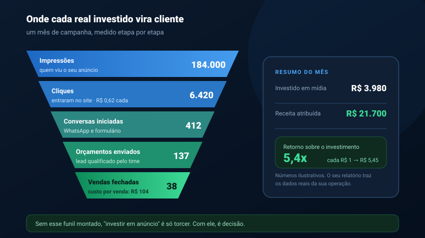
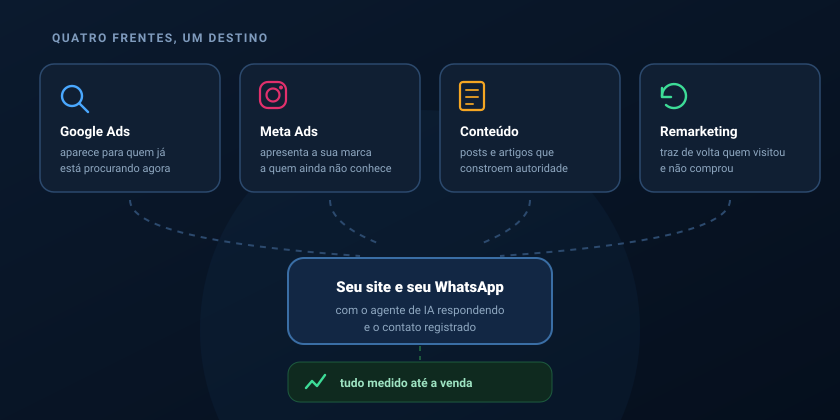

Metade da sua verba de anúncio está sendo desperdiçada. A questão é saber qual metade.
Essa frase tem quase cem anos e ainda descreve a maioria das empresas — porque continuam anunciando sem saber qual campanha traz cliente e qual só queima dinheiro. Marketing digital bem feito acaba com esse mistério: cada real investido é rastreado do primeiro clique até a venda fechada, e o relatório mostra exatamente onde vale a pena colocar mais.
As três frases que denunciam um marketing sem medição.
Se alguma delas soa familiar, o problema provavelmente não é a verba — é a falta de estrutura para saber o que ela está comprando.
Curtida não paga conta. Impulsionar sem objetivo de conversão entrega alcance barato para quem nunca vai comprar. O número sobe, o caixa não.
Na maioria das vezes o anúncio funcionou e o destino falhou: site lento, página sem clareza, ninguém respondendo o WhatsApp. O dinheiro entrou pela porta e vazou pela janela.
"Acho" é a palavra cara dessa frase. Sem rastreamento configurado, a empresa desliga a campanha que traz venda e mantém a que só gera movimento.
Do anúncio até a venda — cada etapa com nome, número e custo.
Configuramos o rastreamento completo antes de gastar o primeiro real: pixel, conversões, eventos no site e origem de cada contato que chega no WhatsApp. É isso que transforma "investir em anúncio" numa decisão de negócio com dados na mesa.

Quatro frentes que se sustentam umas às outras.
Tráfego pago traz volume agora. Conteúdo constrói autoridade e reduz o custo do tráfego ao longo do tempo. Juntos, custam menos e rendem mais do que qualquer um deles sozinho.
Google Ads
Aparecer no exato momento em que alguém pesquisa o que você vende. É a mídia de maior intenção de compra que existe.
- Pesquisa, Display, YouTube e Performance Max
- Palavras negativas para não queimar verba
- Campanhas locais para quem atende por região
Meta Ads (Instagram e Facebook)
Apresentar a sua marca a quem ainda não sabe que precisa dela, com segmentação por interesse, comportamento e região.
- Públicos personalizados e semelhantes
- Remarketing para quem visitou e não comprou
- Criativos testados em variações (teste A/B)
Conteúdo e redes sociais
Calendário planejado, peças produzidas e publicação com constância. Perfil abandonado derruba a confiança de quem foi conferir antes de comprar.
- Planejamento mensal alinhado ao seu comercial
- Artes, legendas e vídeos curtos
- Resposta a comentários e mensagens
Medição e otimização
A parte que quase ninguém mostra. Acompanhamos os números durante o mês inteiro e realocamos verba para o que está performando.
- Google Analytics, Tag Manager e pixels
- Rastreamento de origem até o WhatsApp
- Relatório mensal em linguagem de dono
Anúncio bom leva o cliente a um lugar que sabe recebê-lo.
De nada adianta pagar caro pelo clique se a pessoa cai num site que demora a abrir, numa página que não explica nada ou num WhatsApp que ninguém responde à noite. É por isso que tratamos mídia, site e atendimento como uma coisa só.
Quando a campanha, a página de destino e o agente de IA que responde são construídos pelo mesmo time, o custo por venda cai — porque nada se perde no caminho.

As regras que evitam as histórias ruins de agência.
Quase todo empresário tem uma história de agência que sumiu, que nunca mostrou número ou que prendeu o acesso das contas. Deixamos os nossos compromissos por escrito para que isso não se repita.
- As contas são suas. Google Ads, Meta e Analytics ficam no seu nome, com acesso total. Se a parceria acabar, o histórico continua com você.
- A verba de mídia vai para a mídia. Você paga o Google e a Meta direto no seu cartão. Nossa remuneração é a gestão, cobrada à parte e de forma clara.
- Relatório que se entende. Nada de PDF com cem gráficos. Quanto entrou, quanto saiu, o que faremos no mês seguinte e por quê.
- Sem promessa de primeiro lugar. Ninguém controla o algoritmo do Google. Quem garante posição está vendendo sorte.
- Sem fidelidade longa. Você fica porque o resultado aparece, não porque assinou dois anos de contrato.
- Falamos quando não vale. Se a sua verba ainda é pequena demais para o seu mercado, dizemos antes — e sugerimos por onde começar.
O que chega para você todo mês.
Em linguagem de dono de empresa, não de analista de mídia.
Quanto foi investido
O total aplicado em cada plataforma e em cada campanha, sem rodeio.
Quantos contatos vieram
Leads gerados, de onde vieram e quanto custou cada um deles.
Quanto virou venda
O retorno sobre o investimento, cruzado com o que o seu comercial fechou.
O plano do próximo mês
O que vamos reforçar, o que vamos cortar e o que será testado.
Do diagnóstico às campanhas rodando.
Diagnóstico
Analisamos o que já foi feito, o que o concorrente está fazendo e onde está o dinheiro fácil que ninguém pegou.
Estrutura
Rastreamento, pixels e conversões configurados. Sem essa base, qualquer número depois seria invenção.
No ar
Campanhas publicadas e conteúdo rodando, com acompanhamento diário nas primeiras semanas.
Otimização
Verba realocada para o que performa, criativos renovados e relatório mensal com o plano seguinte.
Quanto a sua empresa gastou em anúncio no último ano — e quanto isso trouxe de volta?
Se a resposta para a segunda pergunta não é um número, esse é exatamente o ponto de partida. Conte quanto você investe hoje, em quais canais e qual é a sua meta de vendas. Devolvemos um diagnóstico honesto: o que está desperdiçando verba, o que dá para melhorar sem gastar mais e qual retorno é realista esperar no seu mercado.